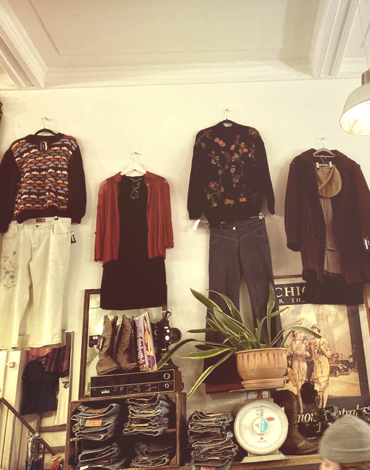

Marbles vintage & vintage kleding
Wat is Marbles Vintage?
Marbles Vintage & design is een winkelketen in Amsterdam die vintage kleding en accessoires verkoopt. Ze hebben drie locaties; een in de Ferdinand Bolstraat in de Pijp, op de Haarlemmerdijk en in de staalstraat in het centrum van Amsterdam.

De winkels zijn fijne plekken om kleding te kopen; er staan overal planten, wordt muziek afgespeeld en wierook gebrand. Dit zorgt voor een positieve sfeer.
Aangezien de kleding en spullen die er verkocht worden tweedehands zijn, is het ook duurzaam om hier te winkelen. Verder is het ook nog eens betaalbaar; je kunt er bijvoorbeeld Dr. Martens vinden in prima staat voor rond de 30-40 euro. Dit is heel wat goedkoper dan een eerstehands paar, en beter voor het milieu!
In de winkel wordt van alles en nog wat verkocht. Wat deze vintagewinkel onderscheidt van ander vintagewinkels is het enorme aanbod aan laarsjes, waaronder combat boots, cowbowboots en Spaanse enkellaarsjes. Naast rokken, spijkerbroeken, topjes en jassen worden er ook veel zonnebrillen, riemen en tassen verkocht.

Wanneer is kleding vintage?
Vintage kleding is tweedehands kleding; de kleding is eerder al gemaakt en gedragen. Er is niet één specifieke tijd waarin het gedragen werd; het gaat om allerlei periodes. Van de roaring twenties tot de hippieperiode in de jaren 60 en 70 tot de grungetijd in de jaren 90. De kleding vertelt heel wat over deze periodes, zoals welke stijlen, patronen en kleuren toen in waren. ‘Vintage’ kan van alles zijn; spullen, meubels, apparaten, boeken, enzovoort. Het draait dus niet alleen maar om kleding. De term ‘Vintage’ wordt vaak door elkaar gehaald met de term ‘retro’ of ‘antiek’. Toch is dat anders dan vintage. Bij antiek gaat het om producten die ouder dan 100 jaar zijn, en bij retro gaat het om producten waarvan het ontwerp gebaseerd is op producten uit andere tijden.
Vintage spullen en kleding zijn tegenwoordig erg populair. Je kunt ze zelf kopen in vintage- en kringloopwinkels. Je kunt ze overal in Amsterdam vinden.
